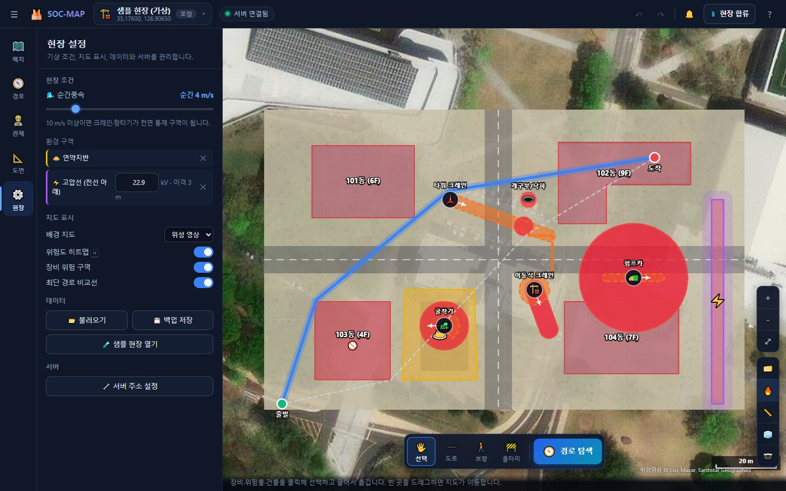
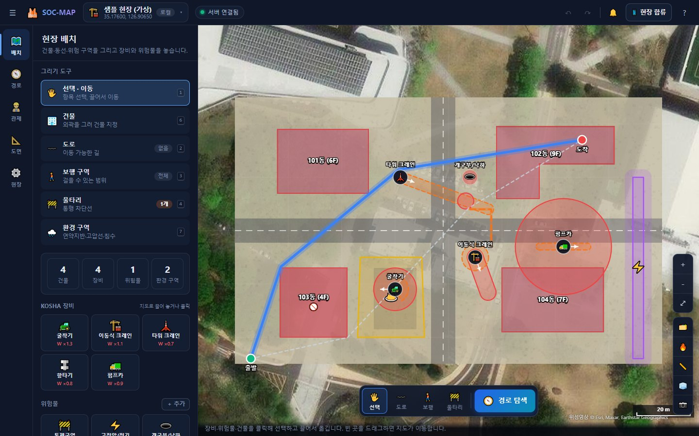
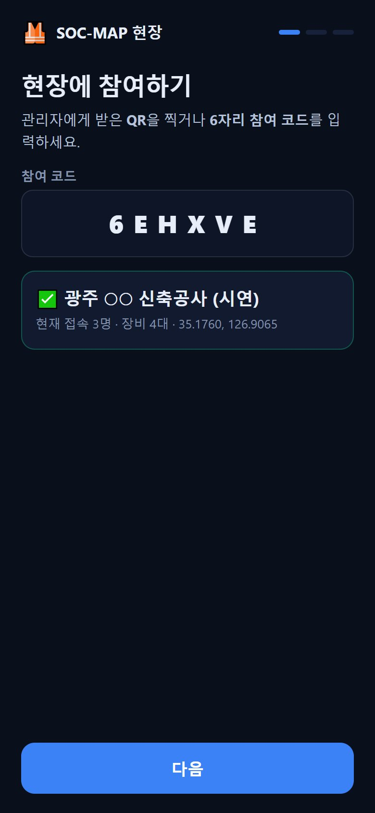
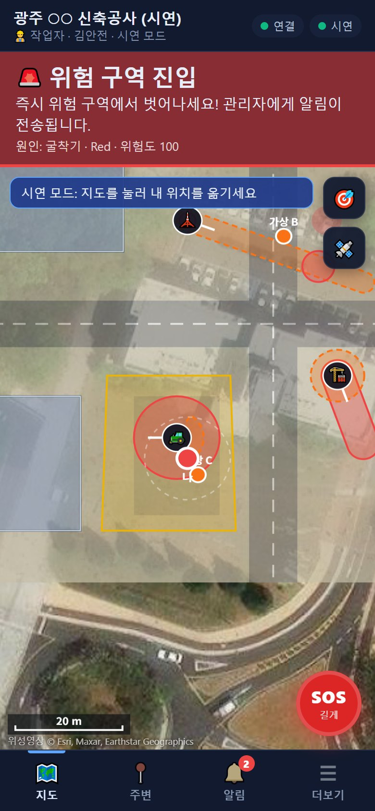
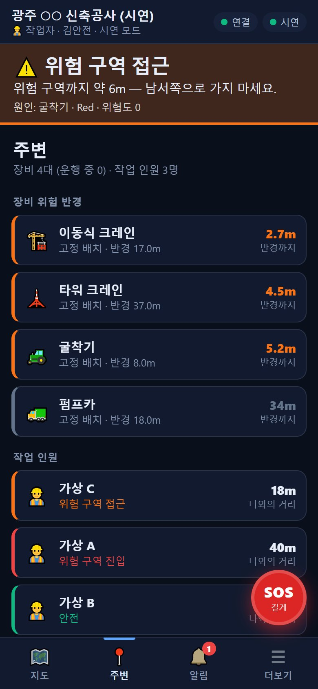
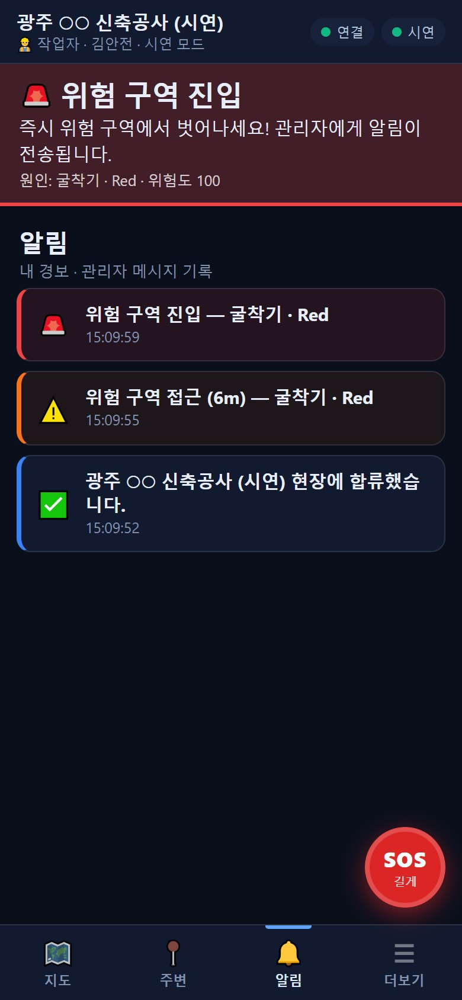

⚠️
KOSHA 기준 위험도 엔진
장비별 작업반경, 후방 사각지대, 붐·지브 회전 반경, 아웃트리거를 Red / Orange 구역으로 모델링하고 0~100 위험도로 합산합니다. 풍속·연약지반·고압선 이격거리 같은 현장 조건이 넘으면 장비 영향 반경 전체가 전면 통제됩니다.

SOC-MAP은 공사 현장을 실제 GPS 위치에 등록하고, 굴착기·크레인 같은 장비의 위험 반경을 미터 단위로 계산합니다. 작업자와 장비 운전원의 휴대폰이 서로의 위치를 1초마다 공유해, 위험 구역에 다가가면 본인에게, 들어가면 관리자에게 경보가 갑니다.
라이브 데모는 서버 없이 동작하는 관리자 화면입니다 · 「🧪 샘플 현장」을 눌러 시작하세요


고용노동부 집계로 2019~2021년 건설 장비 사망자는 굴착기 63명, 이동식 크레인 33명입니다. 후진하는 굴착기의 사각지대, 회전하는 크레인 붐 아래처럼 위험 범위는 땅 위에 그려져 있지 않습니다.
관리자 PC의 웹 화면과 현장 인원의 휴대폰 웹 앱, 둘이 하나의 서버 프로젝트로 연결됩니다. 설치할 앱은 없습니다.
장비별 작업반경, 후방 사각지대, 붐·지브 회전 반경, 아웃트리거를 Red / Orange 구역으로 모델링하고 0~100 위험도로 합산합니다. 풍속·연약지반·고압선 이격거리 같은 현장 조건이 넘으면 장비 영향 반경 전체가 전면 통제됩니다.

주소 검색이나 좌표로 현장 원점을 정하면 WGS84 국소 접평면(ENU) 좌표계가 생깁니다. 위성 지도와 도면, 장비가 같은 미터 좌표 위에 놓입니다.
QR이나 6자리 참여 코드로 합류합니다. 운전원 휴대폰의 위치·방향이 곧 장비의 위치·방향이 되어, 장비가 움직이면 위험 반경도 함께 움직입니다.
작업자에게는 접근 시 진동·방위 안내, 진입 시 사이렌. 운전원에게는 반경 안 작업자 수. 관리자에게는 진입·SOS·신호 끊김을 소리와 기록으로 알립니다.
건물·울타리를 장애물로, 위험도를 비용으로 둔 A* 탐색. 최단 경로와 나란히 그려 거리 증가율과 위험 노출 감소율을 보여줍니다.
YOLOv8 세그멘테이션으로 배치도에서 건물 외곽을 찾습니다. 타일 분할·반전 추론으로 큰 도면의 작은 건물도 잡고, 수정한 결과는 학습 데이터로 저장됩니다.
도면 위 기준점과 실제 위치(휴대폰 60초 평균 측량, 좌표, 위성 지도)를 짝지으면 1점은 이동, 2점은 회전·축척, 3점 이상은 최소제곱 아핀 변환으로 맞춥니다.
굴착기(작업반경 8 m · 후방 사각지대 5 m/120°), 이동식 크레인(붐 14 m), 개구부(위험물 등급 3)가 있는 60 m × 36 m 현장입니다. 현장 앱과 같은 순서로 진입 → 접근 경고 → 주의 → 안전을 판정합니다.
주변에 위험 구역이 없습니다.
간이 시뮬레이션입니다. 실제 앱은 장비 5종, 환경 구역, 칼만 필터, 경보 확정(2회 연속) 규칙을 함께 씁니다.
아래 화면은 모두 실제 앱에서 가상 현장(160 m × 100 m)과 가상 인원으로 촬영했습니다.





관리자가 현장 이름과 위치(주소·좌표·현재 위치)를 정하면 서버 프로젝트, 6자리 참여 코드, 관리자 키가 발급됩니다.
배치도를 올리고 AI로 건물을 읽은 뒤, 기준점으로 실제 위치에 맞춥니다. 장비와 위험물, 동선을 m 단위로 배치합니다.
현장 인원이 QR을 찍어 이름과 역할을 고릅니다. 운전원은 운전할 장비를 고르고, 휴대폰을 운전석에 고정합니다.
서버가 1초마다 모든 위치를 나눠 줍니다. 각 휴대폰이 위험도를 계산해 접근·진입을 알리고, 진입은 관리자에게 확정 보고됩니다.
우선순위가 높은 구역부터 판정하고, 여러 위험원이 겹치면 최댓값을 씁니다.
| 항목 | 기준 | 근거 |
|---|---|---|
| 타워크레인 운전 중지 | 순간풍속 15 m/s 초과 (설치·해체 10 m/s) | 안전보건규칙 제37조② |
| 고압선 접근 | 도달거리 + 이격 3 m (50 kV 초과 시 10 kV당 +10 cm) | 안전보건규칙 제322조 |
| 굴착기 후방영상장치 | 미설치 시 "법정 의무" 경고 | 제221조의2 |
| W_freq | 굴착기 1.3 · 이동식크레인 1.1 · 펌프카 0.9 · 항타기 0.8 · 타워크레인 0.7 | 사망 통계 기반 설계값 |
작업자 본인에게는 즉시, 관리자에게는 2회 연속 진입 시 확정해 오경보를 줄입니다. 해제는 3회 연속일 때만 합니다.
| 단계 | 조건 | 휴대폰 | 관리자 |
|---|---|---|---|
| 주의 | 위험도 30~70 | 짧은 진동 | 목록 표시 |
| 접근 경고 | 위험 구역까지 8 m + 오차 | 진동 · 경고음 · 방위 안내 | 경고 |
| 진입 | 위험 구역(R ≥ 70) 안 | 사이렌 · 화면 깜박임 | 긴급 (소리 · 붉은 테두리) |
| SOS | 버튼 1.2초 누름 | — | 긴급 |
| 신호 끊김 | 30초 이상 보고 없음 | — | 경고 (진입 중이면 긴급) |
FastAPI 서버 하나가 정적 화면, REST API, 프로젝트별 WebSocket 중계, AI 추론을 함께 맡습니다. 휴대폰 GPS를 위해 HTTP(8000)와 HTTPS(8443)를 동시에 엽니다.
Windows 기준입니다. Python 3.10 이상이 필요하며, 실행 스크립트가 첫 실행 때 가상환경과 패키지를 설치합니다.
관리자 화면만 브라우저로 엽니다. 배치·경로·3D·측정을 쓸 수 있고, 휴대폰 연동과 AI 인식은 꺼집니다.
# 이 홈페이지의 라이브 데모 demo/index.html # 또는 프로젝트 폴더에서 SOC_MAP.html 더블 클릭
AI 건물 인식과 서버 프로젝트를 씁니다. 실행하면 관리자 화면이 열립니다.
SOC_MAP_실행.bat
# 직접 실행
cd backend
pip install -r requirements.txt
python main.py같은 와이파이의 휴대폰이 HTTPS로 접속합니다. 방화벽 창에서 개인 네트워크 허용을 누르세요.
현장모니터링_실행.bat
# 직접 실행
python main.py --host 0.0.0.0 --https스마트폰 웹 앱으로 할 수 있는 만큼 했고, 실제 운영에 필요한 부분은 다음 단계로 남겼습니다.
칼만 필터와 오차 반영 경고로 보완합니다. 휴대폰 GPS는 HTTPS에서만 동작하고, 화면이 꺼지면 위치 추적이 멈출 수 있어 "신호 끊김"으로 알립니다.
블루투스 RTK 수신기로 cm급 위치를 받고, Android 포그라운드 서비스로 백그라운드 추적을 지원합니다. 좌표계와 필터 구조는 그대로 씁니다.
다른 현장 도면으로 AI 인식을 평가·재학습하고, 설계값으로 둔 가중치(W_freq, 사각지대 각도)를 현장 자료로 보정합니다.
「🧪 샘플 현장」을 열면 장비 4대와 건물 4동이 있는 가상 현장이 나타납니다. 장비를 끌어 보고, 안전 경로를 찾아 보세요.